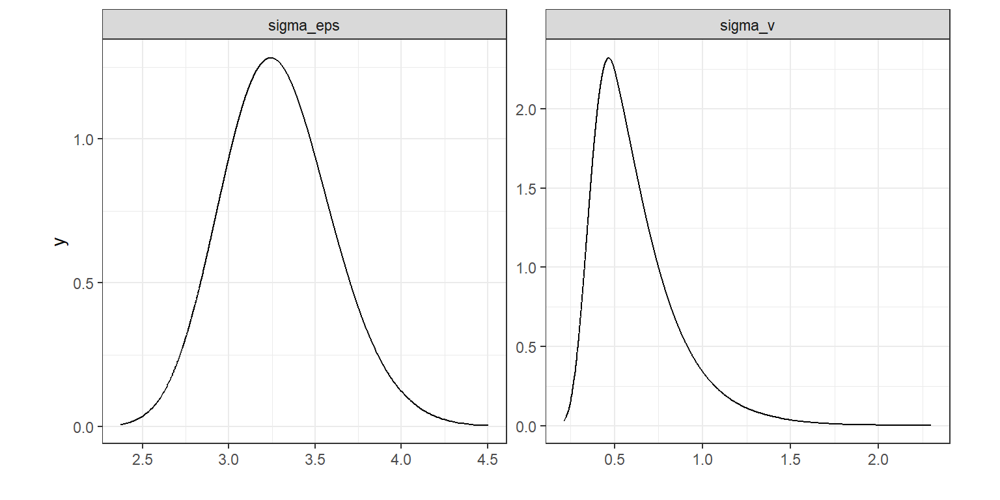

13 Time-series analysis in R-INLA
本章では、INLAで扱える時系列相関を考慮したモデルについて解説する。時系列分析についてより詳しい解説が必要な場合は、他の書籍を参照されたし(e.g., 馬場 2018, 2019; Ravishanker et al. 2022)。
13.1 Simulation study
以下では、シミュレーションデータを用いて話を進める。\(Y_t\)を時系列データとし、以下のモデル式をもとに得られるとする。
\[ \begin{aligned} &Y_t = \rm{Intercept} + \rm{Covariates_i} + \rm{Trend_t} + \epsilon_t \\ &\epsilon_t \sim N(0, \sigma^2_{\epsilon}) \end{aligned} \]
ここでトレンド項(\(\rm{Trend_t}\))が\(Times \times \beta\)のように表せるとすれば、これは通常の線形回帰モデルである。しかしこの場合、時間的な疑似相関が生じてしまう。この問題を解決するため、いわゆるランダムウォークが用いられる。もっとも単純なランダムウォークモデルは以下のように書ける。10
\[ \begin{aligned} &Y_t = \rm{Intercept} + \rm{Covariates_i} + \mu_t + \epsilon_t \\ &\mu_t = \mu_{t-1} + v_t\\ &\epsilon_t \sim N(0, \sigma^2_{\epsilon}) \; and \; v_t \sim N(0, \sigma^2_v) \end{aligned} \]
このモデルでは、互いに独立な残差\(\epsilon_t\)と\(v_t\)がある。以下、これらについて理解するために\(\sigma_{\epsilon}\)と\(\sigma_{v}\)に様々な値を当てはめたときにシミュレートされる\(Y_t\)を図示したのが図13.1である。1行目の3つは\(\sigma_{\epsilon} = 1,\sigma_v = 1\)\(、2行目の3つは\)\(\sigma_{\epsilon} = 1,\sigma_v = 0.1\)\(、3行目の3つは\)\(\sigma_{\epsilon} = 5, \sigma_v = 1\)\(、4行目の3つは\)\(\sigma_{\epsilon} = 1, \sigma_v = 5\)\(、5行目の3つは\)\(\sigma_{\epsilon} = 3, \sigma_v = 3\)である。なお、線は\(\mu_t\)を、点は\(Y_t\)を表す。
sigma_e <- rep(c(1,1,5,1,3), each = 3)
sigma_v <- rep(c(1, 0.1, 1,5,3), each = 3)
set.seed(123)
tmax <- 100
Intercept <- 3.2
y <- matrix(ncol = 15, nrow = tmax)
mu <- matrix(ncol = 15, nrow = tmax)
mu[1, 1:15] <- rnorm(n = 15, mean = 0, sd = 1)
y[1, 1:15] <- Intercept + mu[1,1:15] + rnorm(n = 15, mean = 0, sd = sigma_e)
for(j in seq_along(sigma_e)){
for(i in 2:100){
mu[i,j] <- mu[i-1,j] + rnorm(n = 1, 0, sigma_v[j])
y[i, j] <- Intercept + mu[i,j] + rnorm(n = 1, 0, sigma_e[j])
}
}
y %>%
data.frame() %>%
mutate(time = 1:n()) %>%
pivot_longer(1:15) %>%
mutate(name = as.numeric(str_replace_all(name, "X",""))) %>%
ggplot(aes(x = time, y = value))+
geom_point(size = 0.5)+
geom_line(data = mu %>%
data.frame() %>%
mutate(time = 1:n()) %>%
pivot_longer(1:15) %>%
mutate(name = as.numeric(str_replace_all(name, "X",""))),
aes(y = value + Intercept),
linewidth = 0.8)+
facet_rep_wrap(~name, scales = "free",
repeat.tick.labels = TRUE,
ncol = 3)+
theme_bw()+
theme(aspect.ratio = 0.7)+
labs(y = "Simulated data")
図13.1: Examples of simulated data sets with different random walk trends. Each of the three panels on the same row represents a different simulation from the same model. The number above a panel is the simulation number. In simulations 1–3 (top row) we used σ ε = 1 and σ v = 1; in simulations 4–6 (second row) we used σ ε = 1 and σ v = 0.1; in simulations 7–9 we used σ ε = 5 and σ v = 1; in simulations 10–12 we used σ ε = 1 and σ v = 5; and in simulations 13–15 we used σ ε = 3 and σ v = 3.
この図からは、\(\sigma_v\)が小さいとトレンド項(\(\mu_t\))の変動も小さく、なめらかであることが分かる(e.g., 2行目)。反対に、\(\sigma_v\)が大きいと\(\mu_t\)の変動が大きくなる。一方で、\(\sigma_{\epsilon}\)は大きいほど\(Y_t\)がトレンド項\(\mu_t\)の周りで大きくばらつく。ランダムウォークについてさらに詳しい解説は Durbin and Koopman (2012) や 馬場 (2018) 、馬場 (2019) などを参照。
13.2 Trends in migration dates of sockeye salmon
13.2.1 Applying a random walk trend model
以下では、ベニザケの回遊日を研究した Crozier et al. (2011) のデータを用いる。
salmon <- read_csv("data/sockeye.csv")
datatable(salmon,
options = list(scrollX = 30),
filter = "top")図13.2は年ごとの回遊日の中央値をプロットしたものである。
salmon %>%
ggplot(aes(x = Year, y = MigDay))+
geom_point()+
geom_line()+
theme_bw()+
theme(aspect.ratio = 0.8)+
labs(y = "Migration day")
図13.2: Time-series plot of (median) arrival day versus year.
リサーチクエスチョンは、このデータにトレンドが存在するかである。そこで、以下のランダムウォークモデルを適用する。
\[ \begin{aligned} &MigDay_t = \rm{Intercept} + \mu_t + \epsilon_t \\ &\mu_t = \mu_{t-1} + v_t\\ &\epsilon_t \sim N(0, \sigma^2_{\epsilon}) \; and \; v_t \sim N(0, \sigma^2_v) \end{aligned} \tag{13.1} \]
INLAでは以下のようにモデルを実行できる。
m14_1 <- inla(MigDay ~ f(Year, model = "rw1"),
control.compute = list(dic = TRUE),
control.predictor = list(compute = TRUE),
family = "gaussian",
data = salmon)モデルの推定結果は以下のように求められる。
##
## Call:
## c("inla.core(formula = formula, family = family, contrasts = contrasts,
## ", " data = data, quantiles = quantiles, E = E, offset = offset, ", "
## scale = scale, weights = weights, Ntrials = Ntrials, strata = strata,
## ", " lp.scale = lp.scale, link.covariates = link.covariates, verbose =
## verbose, ", " lincomb = lincomb, selection = selection, control.compute
## = control.compute, ", " control.predictor = control.predictor,
## control.family = control.family, ", " control.inla = control.inla,
## control.fixed = control.fixed, ", " control.mode = control.mode,
## control.expert = control.expert, ", " control.hazard = control.hazard,
## control.lincomb = control.lincomb, ", " control.update =
## control.update, control.lp.scale = control.lp.scale, ", "
## control.pardiso = control.pardiso, only.hyperparam = only.hyperparam,
## ", " inla.call = inla.call, inla.arg = inla.arg, num.threads =
## num.threads, ", " blas.num.threads = blas.num.threads, keep = keep,
## working.directory = working.directory, ", " silent = silent, inla.mode
## = inla.mode, safe = FALSE, debug = debug, ", " .parent.frame =
## .parent.frame)")
## Time used:
## Pre = 0.669, Running = 0.533, Post = 0.0676, Total = 1.27
## Fixed effects:
## mean sd 0.025quant 0.5quant 0.975quant mode kld
## (Intercept) 181.279 0.423 180.447 181.279 182.11 181.279 0
##
## Random effects:
## Name Model
## Year RW1 model
##
## Model hyperparameters:
## mean sd 0.025quant 0.5quant
## Precision for the Gaussian observations 0.095 0.019 0.064 0.093
## Precision for Year 3.790 2.685 0.633 3.158
## 0.975quant mode
## Precision for the Gaussian observations 0.137 0.09
## Precision for Year 10.634 1.79
##
## Deviance Information Criterion (DIC) ...............: 326.14
## Deviance Information Criterion (DIC, saturated) ....: 69.42
## Effective number of parameters .....................: 6.69
##
## Marginal log-Likelihood: -187.05
## is computed
## Posterior summaries for the linear predictor and the fitted values are computed
## (Posterior marginals needs also 'control.compute=list(return.marginals.predictor=TRUE)')トレンド項\(\mu_t\)は時間とともに変化するランダム効果であり、その情報は以下で確認できる。
図示すると以下のようになる。
m14_1$summary.random$Year %>%
rename(Year = ID) %>%
ggplot(aes(x = Year, y = mean))+
geom_line()+
geom_ribbon(aes(ymax = `0.025quant`, ymin = `0.975quant`),
alpha = 0, color = "black", linetype = "dashed")+
theme_bw()+
theme(aspect.ratio = 1)+
labs(y = "Random walk trend")
切片も足した予測値は以下のように求められる。
m14_1$summary.fitted.values %>%
bind_cols(salmon) %>%
ggplot(aes(x = Year, y = mean))+
geom_line()+
geom_ribbon(aes(ymax = `0.025quant`, ymin = `0.975quant`),
alpha = 0, color = "black", linetype = "dashed")+
geom_point(aes(y = MigDay),
shape = 1)+
theme_bw()+
theme(aspect.ratio = 1)+
labs(y = "Observed and fitted values")
13.2.2 Posterior distribution of sigmas
INLAは精度\(\tau = 1/\sigma^2\)を推定するので、\(\sigma_{\epsilon}\)と\(\sigma_v\)の事後分布を求めるためには以下のような変換が必要である。それぞれの事後平均は以下のように求められる。
tau_eps <- m14_1$marginals.hyperpar$`Precision for the Gaussian observations`
tau_v <- m14_1$marginals.hyperpar$`Precision for Year`
fun <- function(x){1/sqrt(x)}
sigma_eps <- inla.emarginal(fun, tau_eps)
sigma_v <- inla.emarginal(fun, tau_v)
c(sigma_eps, sigma_v)## [1] 3.2863230 0.6197087事後分布は以下のように書ける。
pd_sigma_eps <- inla.tmarginal(fun, tau_eps)
pd_sigma_v <- inla.tmarginal(fun, tau_v)
pd_sigma_eps %>%
data.frame() %>%
mutate(par = "sigma_eps") %>%
bind_rows(pd_sigma_v %>%
data.frame() %>%
mutate(par = "sigma_v")) %>%
ggplot(aes(x = x, y = y))+
geom_line()+
facet_rep_wrap(~par, repeat.tick.labels = TRUE,
scales = "free")+
labs(x = "")+
theme_bw()+
theme(aspect.ratio = 1)
13.2.3 Covariates and trends
式(13.1)のモデルは以下のように説明変数を加えて簡単に拡張できる。ここでは、気温(\(Temp_t\))を加える。
\[ \begin{aligned} &MigDay_t = \rm{Intercept} + Temp_t \times \beta + \mu_t + \epsilon_t \\ &\mu_t = \mu_{t-1} + v_t\\ &\epsilon_t \sim N(0, \sigma^2_{\epsilon}) \; and \; v_t \sim N(0, \sigma^2_v) \end{aligned} \tag{13.2} \]
このモデルは以下のように実行できる。
f14_2 <- MigDay ~ Temp + f(Year, model = "rw1")
m14_2 <- inla(f14_2,
control.compute = list(dic = TRUE),
control.predictor = list(compute = TRUE),
family = "gaussian",
data = salmon)先ほどのモデルと比べると、気温を共変量に加えたモデルの方がDICが低い。
## [1] 326.1440 321.0941また、気温にかかる係数の95%確信区間は0を含まないので、応答変数に重要な影響を与えていることが示唆される。
13.2.4 Making the trend smoother
\(\sigma_v\)の事前分布を変えたとき、トレンド項\(\mu_t\)の事後分布は大きな影響を受ける。以下、このことをシミュレーションによって確認する。
13.2.4.1 Changing the values of the gamma prior
INLAでは\(\tau_v = 1/\sigma_v^2\)の事前分布はデフォルトでは\(Gamma(1, 0.00001)\)になっている(第8章参照)。しかし、個の分布が最善かには議論がある。第8章では、 事前分布に\(Gamma(1, 0.5)\)を用いたモデルも実行した。この事前分布は、 Carroll et al. (2015) によって推奨されているものである。この事前分布の下では、\(\sigma_v\)はおよそ0から5までの値をとる。
INLAでは、以下のようにしてこの事前分布によるモデルを実行できる。
f14_3 <- MigDay ~ Temp + f(Year, model = "rw1",
hyper = list(theta = list(prior = "loggamma",
param = c(1,0.5))))
m14_3 <- inla(f14_3,
control.compute = list(dic = TRUE),
control.predictor = list(compute = TRUE),
family = "gaussian",
data = salmon)Blangiardo and Cameletti (2015) は、\(\sigma_v\)がとりうる範囲について事前に知識があれば、それをもとに事前分布のパラメータを検討することができることを示している。例えば、仮に\(\sigma_v\)が0.3から0.7の範囲をとりうると分かっているとしよう。このとき、シミュレーションによって\(\sigma_v\)を10000個生成する。
このとき、\(\tau_v\)の分布は以下のようになる。
sim.tau_v <- 1/sim.sigma_v^2
data.frame(x = sim.tau_v) %>%
ggplot(aes(x = x))+
geom_density()+
theme_bw()+
theme(aspect.ratio = 1)+
coord_cartesian(xlim = c(1,12))
ガンマ分布はshape(\(a\))とscale(\(b\))の2つのパラメータによって決まるが、これらはガンマ分布の期待値\(E(X)\)と分散\(var(X)\)を用いて以下のように表せる。
\[ \begin{aligned} &a = E(X)^2/var(X)\\ &b = a/E(X) \end{aligned} \]
よって、\(\tau_v\)がガンマ分布に従うとしたらパラメータ\(a,b\)は以下の値になる。
## [1] 3.9710889 0.8359842これらのパラメータを持つガンマ分布を実際の\(\tau_v\)の分布と一緒に描くと以下のようになる。おおよそ一致していることが見て取れる。
gamma <- rgamma(n =10000, shape = a, scale = b)
data.frame(x = c(sim.tau_v, gamma),
type = rep(c("tau","gamma"), each = 10000)) %>%
ggplot(aes(x = x, group = type))+
geom_density(aes(linetype = type))+
scale_linetype_manual(values = c("dashed","solid"))+
theme_bw()+
theme(aspect.ratio = 1)+
coord_cartesian(xlim = c(0,12))
13.2.4.2 changing the gamma prior to the PC prior
Simpson et al. (2014) はPenalized Complexity (PC) 事前分布というものを導入している。この事前分布では、1つのパラメータを用いて事前分布の強弱を表現できる。例えば\(\sigma_v\)のPC事前分布を考えるとき、以下の式に用いる\(U\)を決める必要がある。\(\alpha\)には0.05を用いる。
\[ Prob(\sigma_v > U) = \alpha \]
例えば\(U = 100\)とするとき、\(\sigma_v\)が100以上の大きな値をとる確率は非常に小さいということを示す。このとき、事前分布はほとんど情報を持っていない。一方で、\(U = 0.1\)とするならば、\(\sigma_v\)は高い確率で0から0.1までの値をとることになり、事前分布は情報があるとみなせる。
以下では、様々な\(U\)を定めたときの\(\tau_v\)の分布を描いたものである。密度の算出については Simpson et al. (2014) を参照。\(U\)が大きいほど\(\sigma_v\)がとりうる範囲も大きくなるので、逆に\(\tau_v\)は非常に狭い分布になる。逆もしかりである。
U <- c(0.1, 0.5, 1, 2, 5)
alpha <- 0.05
DensTau <- matrix(nrow = 100, ncol = 5)
for (i in 1:5){
lambda <- - log(alpha) / U[i]
tau.v <- seq(0.001, 12, length = 100)
DensTau[,i] <- (lambda / 2) * tau.v ^(-3/2) * exp(-lambda*tau.v^(-0.5))
}
data.frame(x = tau.v,
y = as.vector(DensTau),
U = rep(U, each = 100)) %>%
mutate(U = str_c("U = ",U)) %>%
ggplot(aes(x = x, y = y))+
geom_line()+
facet_rep_wrap(~U, repeat.tick.labels = TRUE,
scales = "free")+
theme_bw()+
theme(aspect.ratio = 1)+
labs(y = "Density", x = expression(tau[v]))
INKAでは以下のようにPC事前分布を用いた分析ができる。以下では、\(U\)が6つの値(\(0.01, 0.05, 0.1, 0.5, 1, 5\))をとるときそれぞれのモデルを実行している。
U <- c(0.01, 0.05, 0.1, 0.5, 1, 5)
keys <- paste0("m14_4_", 1:6)
for(i in 1:6){
hyper.prec <- list(theta = list(prior = "pc.prec",
param = c(U[[i]], 0.05)))
f14_4 <- MigDay ~ f(Year,
model = "rw1",
hyper = hyper.prec)
m14_4 <- inla(f14_4,
control.compute = list(dic = TRUE),
control.predictor = list(compute = TRUE),
family = "gaussian",
data = salmon)
assign(keys[i], m14_4)
}\(U\)の値によってモデルの予測値(\(\rm{Intercept + \mu_t}\))がどう変わるかを示したのが図13.3である。\(U\)の値が小さいと\(\sigma_v\)も0に近い値しか取らないので、予測値がほぼ変動しないことが分かる。一方で、\(U\)が一定以上大きければ結果はあまり変わらない。
m14_4_1$summary.fitted.values %>%
bind_rows(m14_4_2$summary.fitted.values) %>%
bind_rows(m14_4_3$summary.fitted.values) %>%
bind_rows(m14_4_4$summary.fitted.values) %>%
bind_rows(m14_4_5$summary.fitted.values) %>%
bind_rows(m14_4_6$summary.fitted.values) %>%
mutate(Year = rep(salmon$Year, times = 6)) %>%
mutate(U = rep(str_c("U = ", U), each = 61)) %>%
ggplot(aes(x = Year, y = mean))+
geom_line()+
geom_ribbon(aes(ymax = `0.025quant`, ymin = `0.975quant`),
alpha = 0.5, color = "black", linetype = "dashed")+
geom_point(aes(y = MigDay),
shape = 1,
data = salmon)+
facet_rep_wrap(~U, repeat.tick.labels = TRUE,
scales = "free")+
theme_bw()+
theme(aspect.ratio = 1)+
labs(y = "Migration date")図13.3: Fitted values for the rw1 model applied on the salmon arrival dates data. A PC prior was used for the precision parameter τ v of the variance of the random walk. Each panel corresponds to a different value of U.
13.2.4.3 Changing the random walk model: rw2
INLAにはこれまで用いてきたランダムウォークモデルrw1に加えてもう一つのランダムウォークモデルrw2がある。これは、以下のように書ける11。rw2モデルではこれまで用いていたランダムモデルよりも滑らかな予測値が得られる。
\[ \begin{aligned} &(\mu_t - \mu_{t-1}) - (\mu_{t-1} - \mu_{t-2}) = v_t \\ &v_t \sim N(0,\sigma^2_v) \end{aligned} \]
これは、\(\phi_t = \mu_t - \mu_{t-1}\)と書くとき、以下のように書き換えられる。
\[
\begin{aligned}
&\phi_t - \phi_{t-1} = v_t \\
&v_t \sim N(0,\sigma^2_v)
\end{aligned}
\]
13.3 Trends in polar bear movements
以下では、シロクマの自発的あるいは受動的な移動を分析した Mauritzen et al. (2003) のデータを用いる。1988年から1999年の間に、86頭のオトナのメスの位置情報がテレメトリーによって記録された。テレメトリーは6日ごとに最大3年間位置情報を記録した。記録は2つの場所(スバールバル諸島とバレンツ海)で行われている。
pb <- read_delim("data/PolarBearsV2.txt") %>%
mutate(fRepro = factor(Repro,
levels = c("0","1","2"),
labels = c("With cubs of the year",
"With one-year old cubs",
"With 2-year old cubs / weaning & reproducing"))) %>%
mutate(BearID = as.integer(as.factor(BearID)))
datatable(pb,
options = list(scrollX = 20),
filter = "top")以下のモデルを考える。回帰係数は省略している。また、\(Bear_i\)は個体IDのランダム切片である。\(Repro_{ij}\)はクマ\(i\)の\(j\)時点での配偶状態(0: 1歳未満の子がいる、1: 1歳の子がいる、2: 2歳で離乳した子がいる)を表す。最後に、 \(f_1(Year_{ij}), f_2(DayInYear_{ij})\)はそれぞれ年による長期的なトレンドと年内の日付による短期的なトレンドを表し、いずれもランダムウォークモデルを当てはめる。
\[ \begin{aligned} &Movements_{ij} \sim Gamma(\mu_{ij}, r) \\ &E(Movement_{ij}) = \mu_{ij}\\ &log(\mu_{ij}) = Intercept + f_1(Year_{ij}) + f_2(DayInYear_{ij}) + Repro_{ij} + Bear_i Bear_i \sim N(0, \sigma^2_{Bear}) \end{aligned} \]
INLAでは以下のように実行できる。
f14_5 <- Movement ~ fRepro + f(Year, model = "rw1") + f(DayInYear, model = "rw1") + f(BearID, model = "iid")
m14_5 <- inla(f14_5,
control.predictor(compute = TRUE),
family = "gamma",
data = pb)モデルによって得られた2つのランダムウォークトレンドは以下の通り。観察年(Year)のトレンドはかなり滑らかな一方、日付(DayInYear)のトレンドはかなりガタガタしている。
mu_year <- m14_5$summary.random$Year
mu_diy <- m14_5$summary.random$DayInYear
mu_year %>%
rename(Year = 1) %>%
ggplot(aes(x = Year, y = mean))+
geom_line()+
geom_ribbon(aes(ymax = `0.025quant`, ymin = `0.975quant`),
alpha = 0, color = "black", linetype = "dashed")+
geom_hline(yintercept = 0,
linetype = "dotted",
linewidth = 1)+
theme_bw()+
theme(aspect.ratio = 1)+
scale_y_continuous(breaks = seq(-0.2,0.2,0.02))+
labs(y = "Smoother") -> p1
mu_diy %>%
rename(DayInYear = 1) %>%
ggplot(aes(x = DayInYear, y = mean))+
geom_line()+
geom_ribbon(aes(ymax = `0.025quant`, ymin = `0.975quant`),
alpha = 0, color = "black", linetype = "dashed")+
geom_hline(yintercept = 0,
linetype = "dotted",
linewidth = 1)+
theme_bw()+
theme(aspect.ratio = 1)+
scale_y_continuous(breaks = seq(-0.4,0.6,0.1))+
labs(y = "Smoother") -> p2
p1 + p2
これを解決する方法としては、日付のトレンドにrw2モデルを適用することが挙げられる。また、ハイパーパラメータの事前分布を変えることもできるが、このモデルでは複数のパラメータがあるので行わない。かわりに、ここではPC事前分布を用いる。
U <- 1.5
hyper.prec <- list(theta = list(prior = "pc.prec",
param = c(U, 0.01)))
f14_6 <- Movement ~ fRepro + f(Year,
model = "rw1",
hyper = hyper.prec) +
f(DayInYear,
model = "rw2",
hyper = hyper.prec)+ f(BearID, model = "iid")
m14_6 <- inla(f14_6,
control.predictor(compute = TRUE),
family = "gamma",
data = pb)その結果を表したのが以下の図である。
mu_year <- m14_6$summary.random$Year
mu_diy <- m14_6$summary.random$DayInYear
mu_year %>%
rename(Year = 1) %>%
ggplot(aes(x = Year, y = mean))+
geom_line()+
geom_ribbon(aes(ymax = `0.025quant`, ymin = `0.975quant`),
alpha = 0, color = "black", linetype = "dashed")+
geom_hline(yintercept = 0,
linetype = "dotted",
linewidth = 1)+
theme_bw()+
theme(aspect.ratio = 1)+
scale_y_continuous(breaks = seq(-0.2,0.2,0.02))+
labs(y = "Smoother") -> p1
mu_diy %>%
rename(DayInYear = 1) %>%
ggplot(aes(x = DayInYear, y = mean))+
geom_line()+
geom_ribbon(aes(ymax = `0.025quant`, ymin = `0.975quant`),
alpha = 0, color = "black", linetype = "dashed")+
geom_hline(yintercept = 0,
linetype = "dotted",
linewidth = 1)+
theme_bw()+
theme(aspect.ratio = 1)+
scale_y_continuous(breaks = seq(-0.4,0.6,0.1))+
labs(y = "Smoother") -> p2
p1 + p2
13.4 Trends in whale strandings
本節では、マッコウクジラの漂着を調べた Smeenk (1997) と Pierce et al. (2007) のデータを用いる。クジラの漂着には気候変動やソナーの活動、食物の入手可能性、クジラの回遊パターン、太陽の黒点など様々な要因がかかわっていると考えられている。
データは1563年から2001年までの439の観察からなる。まず、以下のポワソン分布のランダムウォークモデルを適用する。また、同様の負の二項分布モデルも併せて検討する。
\[ \begin{aligned} &Whales_t \sim Poisson(\mu_t)\\ &E(Whales) = \mu_t \\ &log(\mu_t) = Intercept + a_t\\ &a_t = a_{t-1} + v_t\\ &v_t \sim N(0, \sigma^2_v) & \end{aligned} \]
データは以下の通り。
sw <- read_delim("data/Spermwhales.txt") %>%
filter(Year >= 1563 & Year <= 2001)
datatable(sw,
options = list(scrollX = 30),
filter = "top")モデルは以下のように実行できる。
## ポワソンモデル
f14_7 <- Nsea ~ f(Year, model = "rw1")
m14_7 <- inla(f14_7,
control.predictor(compute = TRUE),
family = "poisson",
data = sw)
## 負の二項分布モデル
f14_8 <- Nsea ~ f(Year, model = "rw1")
m14_8 <- inla(f14_8,
control.predictor(compute = TRUE),
family = "nbinomial",
data = sw)ポワソン分布モデルと負の二項分布モデルのランダムウォークトレンド(\(a_t\))を図示したのが図13.4である。ポワソン分布モデルの方がよりガタガタしているのは、応答変数に0が非常に多いからである(82%が0である)。負の二項分布の方がこうしたゼロ過剰のデータにより対応できている。
a_poisson <- m14_7$summary.random$Year
a_nbinom <- m14_8$summary.random$Year
bind_rows(a_poisson, a_nbinom) %>%
mutate(model = rep(c("Poisson","Negbinom"), each = nrow(sw))) %>%
mutate(model = fct_relevel(model, "Poisson")) %>%
rename(Year = ID) %>%
ggplot(aes(x = Year, y = mean))+
geom_line()+
geom_ribbon(aes(ymax = `0.025quant`, ymin = `0.975quant`),
alpha = 0, color = "black", linetype = "dashed")+
geom_hline(yintercept = 0,
linetype = "dotted",
linewidth = 1)+
theme_bw()+
theme(aspect.ratio = 1)+
facet_rep_wrap(~model, repeat.tick.labels = TRUE,
scales = "free")+
labs(y = "Random walk trend")図13.4: A: random walk trend of the Poisson GLMM. B: Random walk trend of a negative binomial GLMM.
13.5 Multivariate time series for Hawaiian birds
13.5.1 Importing and preparing the data
本節では、 Zuur et al. (2007) と Reed et al. (2011) で分析されている、ハワイに生息する3種の固有種を1年に2回測定したデータを用いる。
データは以下の通り。Birdsは確認された羽数を、Yearは観測年を、Speciesは種のID(1: stilts, 2: coots, 3: moorhen)を、Islandはデータを取得した島(1: オアフ, 2: マウイ, 3: カウアイとニイハウ)を示す。SpeciesとIslandは実際の名前を記した変数を作成する。
hb <- read_delim("data/HawaiiBirdsV2.txt")
speciesname <- c("Stilts", "Coots", "Moorhens")
islandname <- c("Oahu", "Maui", "Kauai and Niihau")
hb2 <- hb %>%
mutate(fSpecies = speciesname[hb$Species],
fIsland = islandname[hb$Island]) %>%
mutate(species_island = str_c(fSpecies, ".",fIsland)) %>%
mutate(fSpecies = fct_relevel(fSpecies, "Stilts", "Moorhens"),
fIsland = fct_relevel(fIsland, "Maui", "Oahu"))
datatable(hb2,
options = list(scrollX = 30),
filter = "top")13.5.2 Data exploration
各島における各種の羽数の推移を示したのが図13.5である。島ごとにトレンドは異なっていそうである。一方で、オアフ島のMoorhensとCootsは似たトレンドを持つ。
hb2 %>%
ggplot(aes(x = Year, y = Birds))+
geom_point()+
geom_line()+
facet_rep_grid(fSpecies ~ fIsland,
repeat.tick.labels = TRUE,
scales = "free")+
theme_bw()+
labs(y = "Bird abundance")図13.5: Time-series plot of the bird abundance at three islands and three species.
13.5.3 Model formulation
ここでは、負の二項分布モデルを用いる。考えなければいけないのは、トレンド項をどのように扱うかである。以下の4つのパターンが考えられる。
- 全ての島のすべての種が同じトレンドを持つ
- 島ごとに異なるトレンドを持つが、種によるトレンドの違いはない
- 種ごとに異なるトレンドを持つが、島によるトレンドの違いはない
- 各島の各種ごとに異なるトレンドを持つ
いずれのモデルでもモデルの以下の部分は変わらない。なお、\(t\)は年を、\(i\)は種を、\(j\)は島を表す添え字である。
\[ \begin{aligned} &Birds_{tij} \sim NB(\mu_{tij}, \theta)\\ &E(Birds_{tij}) = \mu_{tij} \\ &var(Birds_{tij}) = \mu_{tij} + \mu_{tij}^2/\theta \end{aligned} \]
一方で、\(\mu_{tij}\)をどうモデリングするかが4つの場合で異なる。\(a_{tij}\)は8つの時系列ごとに異なる切片である。
\[ \begin{aligned} log(\mu_{tij})= \begin{cases} a_{tij} + Trend_t \;\; &(1)\\ a_{tij} + Trend_{tj} \;\; &(2)\\ a_{tij} + Trend_{ti} \;\; &(3)\\ a_{tij} + Trend_{tij} \;\; &(4) \end{cases} \end{aligned} \]
13.5.4 Executing the models
13.5.4.1 One trend for all series
それでは、まず1の場合のモデルを実行する。データから応答変数が欠損値である行を削除する。
ハイパーパラメータの事前分布には、\(U=1\)のPC事前分布を用いる。
hyper.prec <- list(theta = list(prior = "pc.prec",
param = c(1, 0.01)))
f14_9a <- Birds ~ species_island + f(Year, model = "rw1",
scale.model = TRUE,
hyper = hyper.prec)
m14_9a <- inla(f14_9a,
control.compute = list(dic = TRUE),
family = "nbinomial",
data = hb3)モデルの事後平均から算出したピアソン残差は以下のように求められる。
mu <- m14_9a$summary.fitted.values$mean
theta <- m14_9a$summary.hyperpar[1,1]
E1 <- (hb3$Birds - mu)/sqrt(mu + mu^2/theta)モデルから求められた\(\mu_{tij}\)の事後平均とその95%確信区間を図示すると図13.6のようになる。これらの曲線は、切片以外はすべて同じである。
m14_9a$summary.fitted.values %>%
bind_cols(hb3) %>%
ggplot(aes(x = Year, y = mean))+
geom_line()+
geom_ribbon(aes(ymax = `0.025quant`, ymin = `0.975quant`),
alpha = 0.2)+
geom_point(aes(y = Birds))+
theme_bw()+
theme(aspect.ratio = 0.8)+
facet_rep_grid(fSpecies~fIsland, repeat.tick.labels = TRUE,
scales = "free")+
labs(y = "Bird abundance")図13.6: Fitted values of the model m14_9a
モデルの事後平均から算出したピアソン残差を用いて分散パラメータを算出すると、やや過少分散？
mu_a <- m14_9a$summary.fitted.values$mean
theta_a <- m14_9a$summary.hyperpar[1,1]
E1_a <- (hb3$Birds - mu_a)/sqrt(mu_a + mu^2/theta_a)
p_a <- nrow(m14_9a$summary.fixed)
N <- nrow(hb3)
phi_a <- sum(E1^2)/(N - p_a)
phi_a## [1] 0.8425054最後に、残差の自己相関を調べる。
hb3 %>%
mutate(resid = E1_a) %>%
group_by(species_island) %>%
arrange(Year, .by_group = TRUE) -> hb3b
species_island <- unique(hb3b$species_island)
all.out_a <- NULL
for(i in seq_along(species_island)){
data <- hb3b %>% filter(species_island == species_island[i])
out.acf <- acf(data$resid,
lag.max = 15,
plot = FALSE)
out.df <- data.frame(Timelag = out.acf$lag,
Acf = out.acf$acf,
SE = qnorm(0.975)/sqrt(out.acf$n.used),
ID = species_island[i])
all.out_a <- bind_rows(all.out_a, out.df)
}自己相関はまだかなり残っている。
13.5.4.2 One trend for each island
続いて、2のモデルを実行する。このモデルでは、各島ごとに異なるトレンドがあると仮定する。
このようなモデルを実行するとき、まず複数のランダムウォークの事前分布を標準化する必要がある。
また、新たな変数として、各島を表すダミー変数を作成する。また、Yearを3つのモデルに使用するので観察年を含むYear2、Year3という変数も作成する。
hb3 %>%
mutate(Oahu = as.numeric(fIsland == "Oahu"),
Maui = as.numeric(fIsland == "Maui"),
KN = as.numeric(fIsland == "Kauai and Niihau")) %>%
mutate(Year2 = Year,
Year3 = Year)-> hb4モデルは以下のように実行できる。
f14_9b <- Birds ~ species_island + f(Year, Oahu,
model = "rw1",
scale.model = TRUE,
hyper = hyper.prec) +
f(Year2, Maui,
model = "rw1",
scale.model = TRUE,
hyper = hyper.prec) +
f(Year3, KN,
model = "rw1",
scale.model = TRUE,
hyper = hyper.prec)
m14_9b<- inla(f14_9b,
control.compute = list(dic = TRUE),
family = "nbinomial",
data = hb4)3つのランダムウォークごとに\(\sigma_v\)が推定されている。
モデルから求められた\(\mu_{tij}\)の事後平均とその95%確信区間を図示すると図13.7のようになる。
m14_9b$summary.fitted.values %>%
bind_cols(hb4) %>%
ggplot(aes(x = Year, y = mean))+
geom_line()+
geom_ribbon(aes(ymax = `0.025quant`, ymin = `0.975quant`),
alpha = 0.2)+
geom_point(aes(y = Birds))+
theme_bw()+
theme(aspect.ratio = 0.8)+
facet_rep_grid(fSpecies~fIsland, repeat.tick.labels = TRUE,
scales = "free")+
labs(y = "Bird abundance")図13.7: Fitted values of the model m14_9b
先ほどのモデルと比較すると、トレンドを島ごとにした方がはるかに良い。
## [1] 3822.675 3783.597モデルの事後平均から算出したピアソン残差を用いて分散パラメータを算出すると、やや過少分散？
mu_b <- m14_9b$summary.fitted.values$mean
theta_b <- m14_9b$summary.hyperpar[1,1]
E1_b <- (hb3$Birds - mu_b)/sqrt(mu_b + mu_b^2/theta_b)
p_b <- nrow(m14_9b$summary.fixed)
N <- nrow(hb4)
phi_b <- sum(E1_b^2)/(N - p_b)
phi_b## [1] 0.7737521最後に、残差の自己相関を調べる。
hb4 %>%
mutate(resid = E1_b) %>%
group_by(species_island) %>%
arrange(Year, .by_group = TRUE) -> hb4b
species_island <- unique(hb4b$species_island)
all.out_b <- NULL
for(i in seq_along(species_island)){
data <- hb4b %>% filter(species_island == species_island[i])
out.acf <- acf(data$resid,
lag.max = 15,
plot = FALSE)
out.df <- data.frame(Timelag = out.acf$lag,
Acf = out.acf$acf,
SE = qnorm(0.975)/sqrt(out.acf$n.used),
ID = species_island[i])
all.out_b <- bind_rows(all.out_b, out.df)
}自己相関はまだかなり残っているように見える。
13.5.4.3 One trend for each species
続いて、3のモデルを実行する。このモデルでは、各種ごとに異なるトレンドがあると仮定する。
新たな変数として、各島を表すダミー変数を作成する。また、Yearを3つのモデルに使用するので観察年を含むYear2、Year3という変数も作成する。
hb3 %>%
mutate(Stilts = as.numeric(fSpecies == "Stilts"),
Coots = as.numeric(fSpecies == "Coots"),
Moorhens = as.numeric(fSpecies == "Moorhens")) %>%
mutate(Year2 = Year,
Year3 = Year)-> hb5モデルは以下のように実行できる。
f14_9c <- Birds ~ species_island + f(Year, Stilts,
model = "rw1",
scale.model = TRUE,
hyper = hyper.prec) +
f(Year2, Coots,
model = "rw1",
scale.model = TRUE,
hyper = hyper.prec) +
f(Year3, Moorhens,
model = "rw1",
scale.model = TRUE,
hyper = hyper.prec)
m14_9c <- inla(f14_9c,
control.compute = list(dic = TRUE),
family = "nbinomial",
data = hb5)モデルから求められた\(\mu_{tij}\)の事後平均とその95%確信区間を図示すると図13.8のようになる。
m14_9c$summary.fitted.values %>%
bind_cols(hb4) %>%
ggplot(aes(x = Year, y = mean))+
geom_line()+
geom_ribbon(aes(ymax = `0.025quant`, ymin = `0.975quant`),
alpha = 0.2)+
geom_point(aes(y = Birds))+
theme_bw()+
theme(aspect.ratio = 0.8)+
facet_rep_grid(fSpecies~fIsland, repeat.tick.labels = TRUE,
scales = "free")+
labs(y = "Bird abundance")図13.8: Fitted values of the model m14_9c
モデルの事後平均から算出したピアソン残差を用いて分散パラメータを算出すると、やや過少分散？
mu_c <- m14_9c$summary.fitted.values$mean
theta_c <- m14_9c$summary.hyperpar[1,1]
E1_c <- (hb3$Birds - mu_c)/sqrt(mu_c + mu_c^2/theta_c)
p_c <- nrow(m14_9c$summary.fixed)
N <- nrow(hb5)
phi_c <- sum(E1_c^2)/(N - p_c)
phi_c## [1] 0.7466784最後に、残差の自己相関を調べる。
hb5 %>%
mutate(resid = E1_c) %>%
group_by(species_island) %>%
arrange(Year, .by_group = TRUE) -> hb5b
species_island <- unique(hb5b$species_island)
all.out_c <- NULL
for(i in seq_along(species_island)){
data <- hb5b %>% filter(species_island == species_island[i])
out.acf <- acf(data$resid,
lag.max = 15,
plot = FALSE)
out.df <- data.frame(Timelag = out.acf$lag,
Acf = out.acf$acf,
SE = qnorm(0.975)/sqrt(out.acf$n.used),
ID = species_island[i])
all.out_c <- bind_rows(all.out_b, out.df)
}自己相関はまだかなり残っているように見える。
13.5.4.4 One trend for each species and island combination
最後に、4のモデルを実行する。このモデルでは、各島の各種ごとに異なるトレンドがあると仮定する。
新たな変数として、島と種の組み合わせを表すダミー変数を作成する。また、Yearを8つのモデルに使用するので観察年を含むYear2からYear8という変数も作成する。
hb3 %>%
mutate(Stilts_Oahu = as.numeric(species_island == "Stilts.Oahu"),
Stilts_Maui = as.numeric(species_island == "Stilts.Maui"),
Stilts_KN = as.numeric(species_island == "Stilts.Kauai and Niihau"),
Coots_Oahu = as.numeric(species_island == "Coots.Oahu"),
Coots_Maui = as.numeric(species_island == "Coots.Maui"),
Coots_KN = as.numeric(species_island == "Coots.Kauai and Niihau"),
Moorhens_Oahu = as.numeric(species_island == "Moorhens.Oahu"),
Moorhens_Maui = as.numeric(species_island == "Moorhens.Maui")) %>%
mutate(Year2 = Year,
Year3 = Year,
Year4 = Year,
Year5 = Year,
Year6 = Year,
Year7 = Year,
Year8 = Year) -> hb6モデルは以下のように実行できる。
f14_9d <- Birds ~ species_island + f(Year, Stilts_Oahu,
model = "rw1",
scale.model = TRUE,
hyper = hyper.prec) +
f(Year2, Stilts_Maui,
model = "rw1",
scale.model = TRUE,
hyper = hyper.prec) +
f(Year3, Stilts_KN,
model = "rw1",
scale.model = TRUE,
hyper = hyper.prec) +
f(Year4, Coots_Oahu,
model = "rw1",
scale.model = TRUE,
hyper = hyper.prec) +
f(Year5, Coots_Maui,
model = "rw1",
scale.model = TRUE,
hyper = hyper.prec) +
f(Year6, Coots_KN,
model = "rw1",
scale.model = TRUE,
hyper = hyper.prec) +
f(Year7, Moorhens_Oahu,
model = "rw1",
scale.model = TRUE,
hyper = hyper.prec) +
f(Year8, Moorhens_Maui,
model = "rw1",
scale.model = TRUE,
hyper = hyper.prec)
m14_9d <- inla(f14_9d,
control.compute = list(dic = TRUE),
family = "nbinomial",
data = hb6)モデルから求められた\(\mu_{tij}\)の事後平均とその95%確信区間を図示すると図13.9のようになる。より実データに近い予測値になっていることが分かる。
m14_9d$summary.fitted.values %>%
bind_cols(hb4) %>%
ggplot(aes(x = Year, y = mean))+
geom_line()+
geom_ribbon(aes(ymax = `0.025quant`, ymin = `0.975quant`),
alpha = 0.2)+
geom_point(aes(y = Birds))+
theme_bw()+
theme(aspect.ratio = 0.8)+
facet_rep_grid(fSpecies~fIsland, repeat.tick.labels = TRUE,
scales = "free")+
labs(y = "Bird abundance")図13.9: Fitted values of the model m14_9d
モデルの事後平均から算出したピアソン残差を用いて分散パラメータを算出すると、かなり過少分散？
mu_d <- m14_9d$summary.fitted.values$mean
theta_d <- m14_9d$summary.hyperpar[1,1]
E1_d <- (hb6$Birds - mu_d)/sqrt(mu_d + mu_d^2/theta_d)
p_d <- nrow(m14_9d$summary.fixed)
N <- nrow(hb6)
phi_d <- sum(E1_d^2)/(N - p_d)
phi_d## [1] 0.6304094最後に、残差の自己相関を調べる。
hb6 %>%
mutate(resid = E1_d) %>%
group_by(species_island) %>%
arrange(Year, .by_group = TRUE) -> hb6b
species_island <- unique(hb6b$species_island)
all.out_d <- NULL
for(i in seq_along(species_island)){
data <- hb6b %>% filter(species_island == species_island[i])
out.acf <- acf(data$resid,
lag.max = 15,
plot = FALSE)
out.df <- data.frame(Timelag = out.acf$lag,
Acf = out.acf$acf,
SE = qnorm(0.975)/sqrt(out.acf$n.used),
ID = species_island[i])
all.out_d <- bind_rows(all.out_d, out.df)
}自己相関はほとんど消えている。
13.5.5 Mixing Poisson and negative binomial distributions
データを見てみると、時系列によってばらつきの大きさに差があることが分かる。このことから、時系列ごとにポワソン分布を適用したり負の二項分布を適用したらよりデータに合った分析ができ、先ほどのモデルで見られた過少分散も解決できる可能性があることが分かる。INLAではこれを行うことができる。
この分析を行うためには、以下のように各列に各時系列のデータが入った以下のような行列を作成する必要がある。
Y <- matrix(NA, nrow = nrow(hb6), ncol = 8)
hb6 %>%
mutate(species_island = fct_relevel(species_island, unique(hb6$species_island))) -> hb6
hb6 %>%
select(species_island, Birds, Year) %>%
group_by(species_island) %>%
arrange(Year, .by_group = TRUE) %>%
ungroup() %>%
pivot_wider(names_from = species_island,
values_from = Birds) %>%
select(-Year) -> hb7
hb6 %>%
group_by(species_island) %>%
summarise(N = n()) %>%
ungroup() %>%
mutate(cum = cumsum(N))-> n_cat
for(i in seq_along(species_island)){
if(i == 1){
Y[1:n_cat[[3]][i], i] <- na.omit(hb7[[i]])
}else{
Y[(n_cat[[3]][i-1]+1):n_cat[[3]][i], i] <- na.omit(hb7[[i]])
}
}
Y %>%
data.frame()そして、この行列に加えて観察年などを含むリストを作成する。
data_list <- list(Birds = Y,
Stilts_Oahu = hb6$Stilts_Oahu,
Stilts_Maui = hb6$Stilts_Maui,
Stilts_KN = hb6$Stilts_KN,
Coots_Oahu = hb6$Coots_Oahu,
Coots_Maui = hb6$Coots_Maui,
Coots_KN = hb6$Coots_KN,
Moorhens_Oahu = hb6$Moorhens_Oahu,
Moorhens_Maui = hb6$Moorhens_Maui,
species_island = hb6$species_island,
Year = hb6$Year,
Year2 = hb6$Year,
Year3 = hb6$Year,
Year4 = hb6$Year,
Year5 = hb6$Year,
Year6 = hb6$Year,
Year7 = hb6$Year,
Year8 = hb6$Year)モデルは、以下のように実行できる。
f14_9e <- Birds ~ species_island + f(Year, Stilts_Oahu,
model = "rw1",
scale.model = TRUE,
hyper = hyper.prec) +
f(Year2, Stilts_Maui,
model = "rw1",
scale.model = TRUE,
hyper = hyper.prec) +
f(Year3, Stilts_KN,
model = "rw1",
scale.model = TRUE,
hyper = hyper.prec) +
f(Year4, Coots_Oahu,
model = "rw1",
scale.model = TRUE,
hyper = hyper.prec) +
f(Year5, Coots_Maui,
model = "rw1",
scale.model = TRUE,
hyper = hyper.prec) +
f(Year6, Coots_KN,
model = "rw1",
scale.model = TRUE,
hyper = hyper.prec) +
f(Year7, Moorhens_Oahu,
model = "rw1",
scale.model = TRUE,
hyper = hyper.prec) +
f(Year8, Moorhens_Maui,
model = "rw1",
scale.model = TRUE,
hyper = hyper.prec)
m14_9e <- inla(f14_9e,
control.compute = list(dic = TRUE),
family = c("nbinomial", "nbinomial", "nbinomial", "poisson", "poisson", "nbinomial", "nbinomial","nbinomial"),
data = data_list)モデルの事後平均から算出したピアソン残差を用いて分散パラメータを算出すると、概ね過少分散が解消されている。
mu_e <- m14_9e$summary.fitted.values$mean
theta_e <- m14_9e$summary.hyperpar[1,1]
E1_e <- (hb6$Birds - mu_e)/sqrt(mu_e + mu_e^2/theta_e)
p_e <- nrow(m14_9e$summary.fixed)
N <- nrow(hb6)
phi_e <- sum(E1_e^2)/(N - p_e)
phi_e## [1] 1.302552モデルから求められた\(\mu_{tij}\)の事後平均とその95%確信区間を図示すると図13.10のようになる。より実データに近い予測値になっていることが分かる。
m14_9e$summary.fitted.values %>%
bind_cols(hb4) %>%
ggplot(aes(x = Year, y = mean))+
geom_line()+
geom_ribbon(aes(ymax = `0.025quant`, ymin = `0.975quant`),
alpha = 0.2)+
geom_point(aes(y = Birds))+
theme_bw()+
theme(aspect.ratio = 0.8)+
facet_rep_grid(fSpecies~fIsland, repeat.tick.labels = TRUE,
scales = "free")+
labs(y = "Bird abundance")図13.10: Fitted values of the model m14_9d
DICも先ほどより改善している。
## [1] 3613.067 3298.29413.6 AR1 trends
13.6.1 AR1 trend regularly spaced time-series data
最後に、AR1モデルについて解説する。
ベニザケの回遊日を研究した Crozier et al. (2011) のデータを用いるとき、AR1モデルは以下のように表せる。パラメータ\(\rho\)はトレンドがどの程度前年に依存しているかを表す係数である。\(\rho = 1\)であればランダムウォークモデルに一致する。
\[ \begin{aligned} &MigDay_t = \rm{Intercept} + \mu_t + \epsilon_t \\ &\mu_t = \rho \times \mu_{t-1} + v_t\\ &\epsilon_t \sim N(0, \sigma^2_{\epsilon}) \; and \; v_t \sim N(0, \sigma^2_v) \end{aligned} \tag{13.3} \]
ポワソンGLMに対してAR1モデルを適用するとき、もし\(\rho = 0\)であり、\(\sigma_v\)が大きければ、観察レベルランダム切片をもつポワソンGLMMと同じになる。
式(13.3)をINLAで実行すると以下のようになる。
f14_10 <- MigDay ~ f(Year, model = "ar1")
m14_10 <- inla(f14_10,
control.compute = list(dic = TRUE),
control.predictor = list(compute = TRUE),
family = "gaussian",
data = salmon)予測値を描くと以下のようになる。なぜかうまく回らない。原因は不明。
m14_10$summary.fitted.values %>%
bind_cols(salmon) %>%
ggplot(aes(x = Year, y = mean))+
geom_line()+
geom_ribbon(aes(ymax = `0.025quant`, ymin = `0.975quant`),
alpha = 0, color = "black", linetype = "dashed")+
geom_point(aes(y = MigDay),
shape = 1)+
theme_bw()+
theme(aspect.ratio = 1)+
labs(y = "Observed and fitted values")13.6.2 AR1 trend for irregularly spaced time-series data
AR1モデルは基本的に時間的に等間隔に並んだデータに対して用いられる。本節では、そうではないとき(欠損値があるときなど)の対処法を解説する。
簡単に言えば、空間モデルでメッシュを作成したように、規則正しく並んだ時間的なポイントを作成することでこの問題に対処できる。このことを説明するため、南極大陸の3か所(コア)の氷から過去の大気中のCO2の割合を調べた Etheridge et al. (1998) のデータを用いる。
co2 <- read_csv("data/IceCoresV2.csv") %>%
rename(Year = MeanAirAgeYear,
CO2 = CO2MixingRatio)
datatable(co2,
options = list(scrollX = 30),
filter = "top")図13.11は、それぞれのコアにおけるCO2の割合を示したものである。産業革命以降に急激にCO2の割合が高くなっていることが分かるが、DSSのみが産業革命以前のデータを含んでいる。データ間の時間間隔は不規則である。
co2 %>%
ggplot(aes(x = Year, y = CO2))+
geom_point(shape = 1)+
theme_bw()+
theme(aspect.ratio = 0.7)+
facet_rep_wrap(~Core, repeat.tick.labels = TRUE) +
labs(y = "CO2 Mixing ratio (ppm)",
x = "Air age (Year AD)")図13.11: CO 2 mixing ratio (parts per million) plotted versus age (year). Each panel corresponds to a core.
まずは、不規則性を考慮せずにモデルを適用する。全ての時系列でトレンドは同じだとする。
\[ \begin{aligned} &CO2_{ti} = \mu_t + Core_i + \epsilon_{ti}\\ &\mu_t = \rho \times \mu_{t-1} + v_t\\ &\epsilon_{ti} \sim N(0,\sigma^2_{\epsilon}) \; and \; v_t \sim N(0, \sigma^2_v) \end{aligned} \]
普通にモデルを回すと、例えば1006年と1046年、1096年の間隔は同じものとして処理される。モデルは以下のように実行できる。
f14_11a <- CO2 ~ -1 + Core + f(Year, model = "ar1")
m14_11a <- inla(f14_11a,
control.compute = list(dic = TRUE),
family = "gaussian",
data = co2)この結果は、1006年を1、1046年を2、1096年を3としたときと同じ結果になる。
co2 %>%
mutate(Year2 = as.numeric(as.factor(Year))) -> co2b
f14_11b <- CO2 ~ -1 + Core + f(Year2, model = "ar1")
m14_11b <- inla(f14_11b,
control.compute = list(dic = TRUE),
family = "gaussian",
data = co2b)m14_11aとm14_11bで推定された\(\mu_t\)の事後平均と95%確信区間を図示したのが図13.12である。この図から、両モデルが全く同じことをしていたことが分かる。
m14_11a$summary.fitted.values %>%
bind_cols(co2) %>%
ggplot(aes(x = Year, y = mean))+
geom_line()+
geom_ribbon(aes(ymax = `0.025quant`, ymin = `0.975quant`),
alpha = 0.3)+
geom_point(aes(y = CO2),
shape = 1)+
theme_bw()+
theme(aspect.ratio = 1)+
labs(y = "Observed and fitted values") -> p1
m14_11b$summary.fitted.values %>%
bind_cols(co2) %>%
ggplot(aes(x = Year, y = mean))+
geom_line()+
geom_ribbon(aes(ymax = `0.025quant`, ymin = `0.975quant`),
alpha = 0.3)+
geom_point(aes(y = CO2),
shape = 1)+
theme_bw()+
theme(aspect.ratio = 1)+
labs(y = "Observed and fitted values") -> p2
p1 + p2図13.12: Fitted values and 95% credible intervals for each model.
この問題を解決する一つの方法は、規則的に並んだノットを作成し、そのノットに対してトレンドを計算する方法である。例えば、50年ずつのノットを作成すると以下のようになる。
co2 %>%
ggplot(aes(x = Year, y = 0))+
geom_point(shape = "|",
size = 8)+
theme_classic()+
coord_cartesian(ylim = c(0,0.04))+
theme(aspect.ratio = 0.07)+
geom_vline(xintercept = seq(1000,2000, by = 50),
linetype = "dashed")+
scale_y_continuous(breaks = NULL)+
scale_x_continuous(breaks = seq(1000,2000,50))+
labs(y = "")